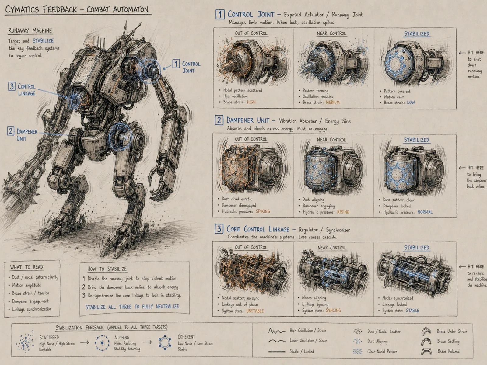
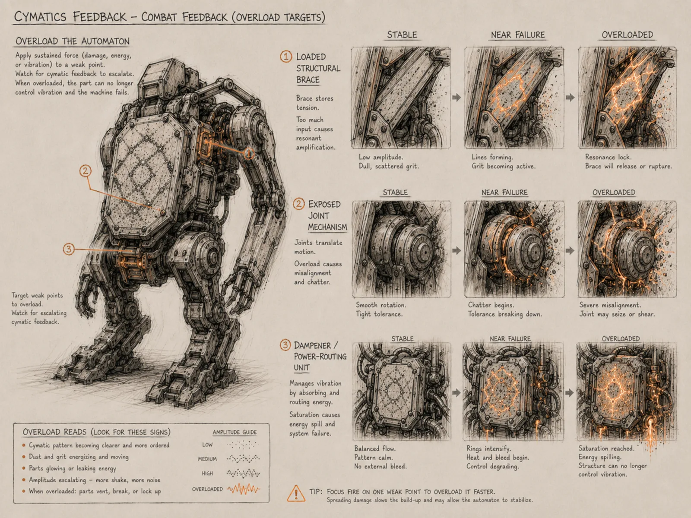
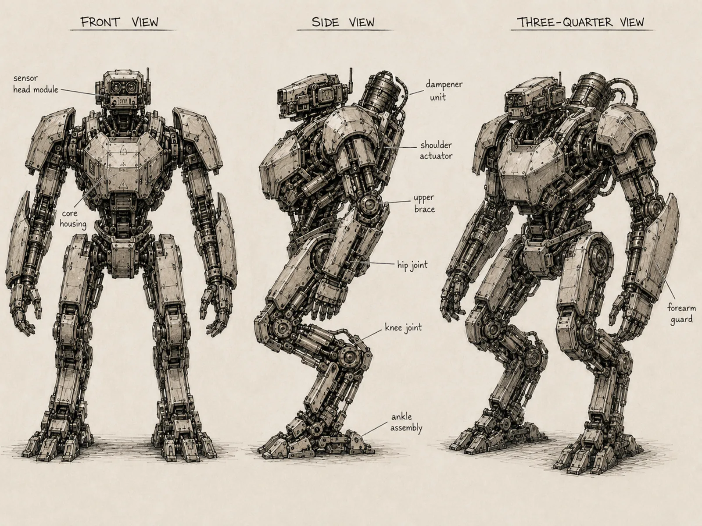
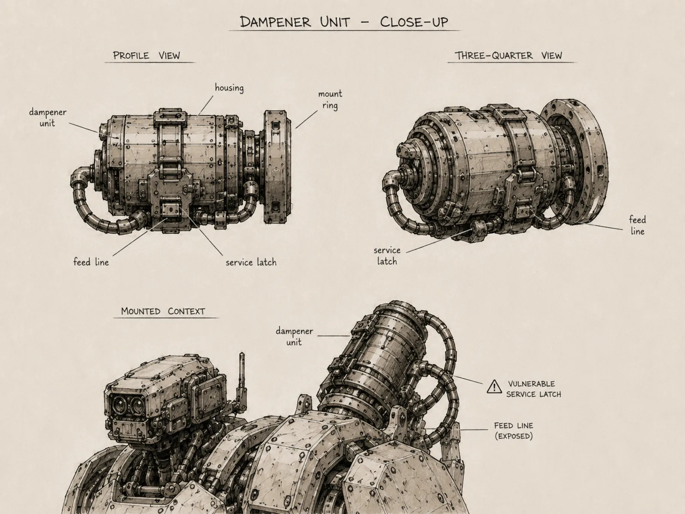
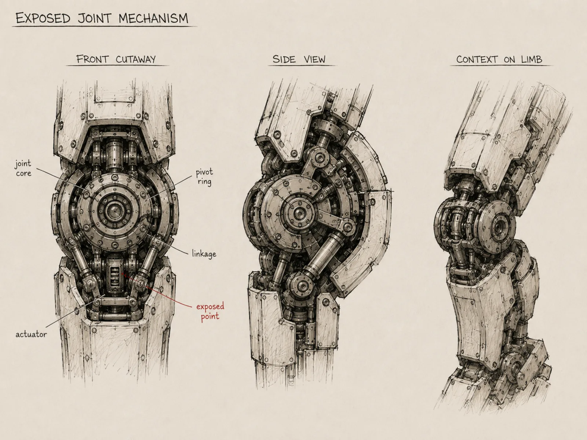
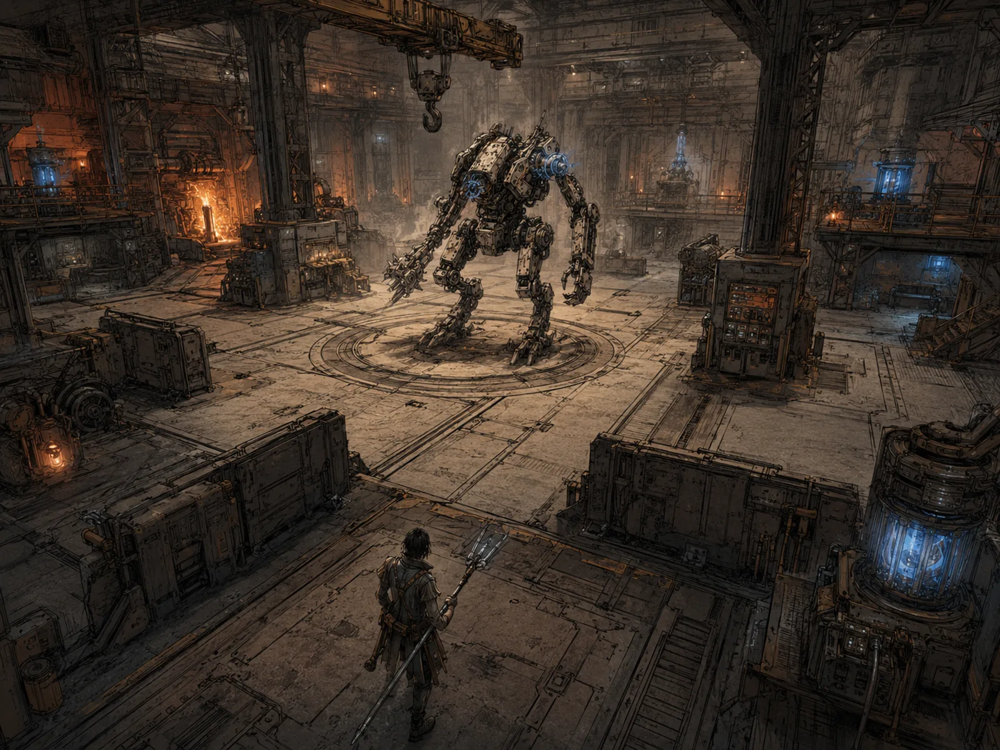

Resonance
An action game where you cannot cut, burn, or out-damage the machines. You find the frequency a part is being held at, and you take it from there.
The mechanic
Here is how the main mechanic works. You probe a part to hear what it is doing. That tells you the frequency its dampener is applying to it. You tune your own frequency to match, and once you are locked, you choose a verb.
Overload is the simple route. Hold the match and drive the part past what it can take. It cracks, buckles, or shears off, and that specific part is gone.
Stabilize is where the skill comes in. The part's frequency wanders as it destabilizes, and you have to match the movement, following it as it drifts, until it calms back down. Get it settled and the part comes back under control instead of coming apart.
There are no HP bars. A machine is exactly the sum of its parts, and every part has its own resonance profile: natural modes, a safe amplitude, coupling points, dampener placement. The machine is the interface.


The machine
The Phase 1 machine is a bipedal Cadence work unit. The turnaround sheet below is what authored it: every readable part on that drawing became a data-asset entry with its own modes, safe amplitude, and coupling points. Sensor head module, core housing, shoulder actuators, upper brace, forearm guard, hip joint, knee joint, ankle assembly.



How the work actually gets done
Rapid playtest loops. I play, something feels wrong, and the rule is that feel gets diagnosed from telemetry. Every verb and every machine state change writes one key=value line to the log. When a sweep feels mushy or a lock feels unfair, I go read the numbers from that exact second before touching any code. Nearly every fix in this project has come out of a log line rather than a theory.
LogResonance: verb=probe part=upper_brace mode=2 f_damp=0.61 LogResonance: verb=sweep f_driver=0.585 lock=0.42 LogResonance: verb=sweep f_driver=0.608 lock=0.93 LogResonance: state=ringing part=upper_brace amp=1.86 safe=1.40 LogResonance: state=sheared part=upper_brace t_hold=2.31
"Boring" is useful data. Blunt playtest feedback goes into the log the same way the numbers do, and the fix starts from both.
The arena
Phase 1 happens on a foundry floor: the machine centered on a circular turntable plate, low cover, resonant stations glowing at the edges. The blockout matches the key below for scale, footing, and where the fight happens.

Stack
C++ gameplay layer
The verbs, the resonance profiles, the lock model. Blueprint stays out of the core loop.
Chaos destruction
Parts fail structurally. A sheared brace is geometry coming apart, played straight.
Blender pipeline
Gray-box part modeling against the concept sheets, exported into the engine.
Telemetry-first iteration
One key=value line per verb and state change. Feel is debugged from the log.
Where it stands
Phase 1, 47 commits in. The dampener session recently turned the dampener from a thing that aims at the player into a machine part with its own failure modes, which exposed four follow-up problems, and that is the honest shape of this project: play, measure, fix, commit, again.
You can work the core loop in miniature on the systems console: probe a part on the concept sheet, match its dampener, and take it apart or settle it.